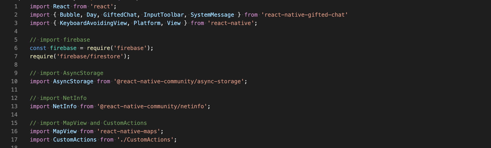

.Overview
Chat App is a native chat app for mobile devices using React Native. The app provides users with a chat interface and options to share images and their location.
.Purpose & Context
More and more people use their phones for daily tasks, such as shopping, creating to-do lists, communicating with friends, scheduling meetings, and more. That's why many companies offer native mobile versions of their web apps, or even skip creating a web app entirely.
In the past, building high-quality mobile apps required a lot of time and money because writing apps for different platforms like iOS and Android required specialized programmers who could build and maintain multiple codebases.
Over time, however, new technologies emerged that made it easier for companies to build and maintain mobile applications using familiar syntax. One of these technologies is React Native, a framework for building Android and iOS apps that only requires one codebase.
.Objective
Use React Native, Expo, and Google Firestore Database to build a chat app for my portfolio and demonstrate my knowledge of JavaScript mobile development.

.Approach
I used the project brief to understand how to approach developing the app. User stories, key features and technical requirements were defined in the brief and I was also presented with some screen design and assets specifications.
I started setting up the development environment to work with React Native and Expo. Then, I created the app’s layout using native UI components and coded the style of the start screen based on the screen designs received in the brief.
With the basic layout done, I build the chat screen and the chat functionality using the Gifted Chat library. This is the most important screen and is where all messages are displayed.
Then, it was time to start implementing data storage. To do this, I added authentication for users anonymously with Firebase. Finally, store conversations in the Firestore Database.
Next, I implemented storing data on the client-side. This means storing chats locally using asyncStorage, so they’re available offline. To do this, I had to authenticate users and store chat messages in Firestore as well, and also on the device (when users are online). Finally, implemented the code to retrieve locally stored messages and disallow the creation of new messages when users are offline.
In the last step I implemented the functionality that let users pick an image from the device’s library and take pictures with the device’s camera app. It was also needed to store images in Google Firebase Cloud Storage and send images via Gifted Chat. Also, let users send their current location in a map view via Gifted Chat. Finally, apply accessibility considerations to app design and development
.Challenges
The most challenging part for me was learning a lot of new tools that I didn’t know before. Setting React Native was pretty straightforward but the syntax is a bit different than React. Expo and Google Firestore were also new to me, so I needed a good amount of time to read through React Native’s documentation and to go through each feature available.
The hardest part for me was testing the app properly. I think the Android Emulator could be improved because the response is slow and it is unable to reproduce some important features, like locating the device. The experience with Expo on my own phone was much better and the communication was very fast. I think the snippets with code from the Expo website can be helpful, but sometimes they lack the context needed to develop your specific app. I would advise other developers to use them with care.
My main takeaway is that developing a native app nowadays is much simpler with React Native. This technology together with Expo and Gifted Chat is impressive, the whole app is light, simple to build and doesn’t need a lot of code. If I were to start again from the beginning, I would allocate more time to read all the documentation properly, because it is very helpful, it allows you to understand every single possible feature and it will make the coding sessions faster.
Summary
Chat App
React Native, Expo, and Google Firestore Database are technologies that allow building a mobile app with JavaScript very effectively. This combo is very powerful and the technologies work very well together. I could implement advanced specifications very effectively.
Testing may be an issue for some developers depending on their devices and the setup of emulators is perhaps the most “boring” part, but once everything is set up the whole experience is pretty good.
I’m looking forward to seeing how React Native and other libraries evolve in the future because it looks very promising. I believe that building native apps will get simpler in the future which would be very good news.